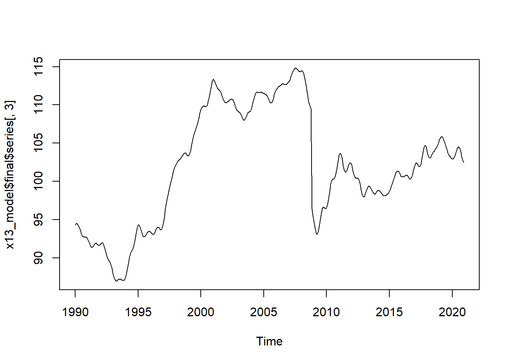

Topic 7 RJDemetra package
Remark: the RJDemetra package requires the preliminary installation of Java SE 8 (or later versions) and the R pakcage rJava.
#install.packages("rJava")
#install.packages("RJDemetra")
library(RJDemetra)## Warning: il pacchetto 'RJDemetra' è stato creato con R versione 4.1.3To illustrate the functioning of the package we will usa the dataset embedded in it, ipi_c_eu, which collects monthly industrial production indices in manifacturing in the EU. The baseline year is 2015 and the series are unadjusted.
When using your own data, you shall transform them in a Time-Series object. Here we provide an example:
example_data <- c(1943.1,1951.53,1983.23,1927.27,2054.57,2056.27,2019.18,2072.2,2069.99,2082.86,2111.94,2099.29,2094.14,2039.87,1944.41,2024.81,2080.62,2054.08,1918.6,1904.42,2021.95,2075.54,2065.55,2083.89,2148.9,2170.95,2157.69,2143.02,2164.99,2246.63,2275.12,2329.91,2366.82,2359.31,2395.35,2433.99)
example_ts <- ts(example_data, start = c(2010,1), frequency = 12)
example_ts## Jan Feb Mar Apr May Jun Jul Aug Sep Oct Nov Dec
## 2010 1943.10 1951.53 1983.23 1927.27 2054.57 2056.27 2019.18 2072.20 2069.99 2082.86 2111.94 2099.29
## 2011 2094.14 2039.87 1944.41 2024.81 2080.62 2054.08 1918.60 1904.42 2021.95 2075.54 2065.55 2083.89
## 2012 2148.90 2170.95 2157.69 2143.02 2164.99 2246.63 2275.12 2329.91 2366.82 2359.31 2395.35 2433.99We take as an example the data for France from ipi_c_eu:
ipi_fr <- ipi_c_eu[,"FR"]
plot(ipi_fr)As explained in the first section, the two most common procedures are the X-13ARIMA-SEATS method and the TRAMO-SEATS method. They both consist of two linked parts: the preprocessing step and the decomposition step. The first is common to both procedures and is based on fitting a RegARIMA model to estimate the effect of trading day variations and outliers and remove them from the original series.
7.1 Preprocessing
The RegARIMA model (model with ARIMA errors) is specified as
\[ z_t=y_t \cdot \beta+x_t \] where
• \(z_t\) is the original series;
• \(β = (β_1, ..., β_n)\) is a vector of regression coefficients;
• \(y_t = (y_{1t}, ..., y_{nt})\) are \(n\) regression variables (outliers, calendar effects, user-defined variables);
• \(x_t\) is a disturbance that follows the general ARIMA process.
Note that the automatically identified specification of the RegARIMA model might differ between X-13 and TRAMO-SEATS (meaning that the number of RA or MA components can be different) but the fitting procedure is the same.
x13(ipi_fr)$regarima## y = regression model + arima (2, 1, 1, 0, 1, 1)
## Log-transformation: no
## Coefficients:
## Estimate Std. Error
## Phi(1) 0.0003269 0.108
## Phi(2) 0.1688192 0.074
## Theta(1) -0.5485606 0.102
## BTheta(1) -0.6660849 0.042
##
## Estimate Std. Error
## Monday 0.55932 0.228
## Tuesday 0.88221 0.228
## Wednesday 1.03996 0.229
## Thursday 0.04943 0.229
## Friday 0.91132 0.230
## Saturday -1.57769 0.228
## Leap year 2.15403 0.705
## Easter [1] -2.37950 0.454
## TC (4-2020) -35.59245 2.173
## AO (3-2020) -20.89026 2.180
## AO (5-2011) 13.49850 1.857
## LS (11-2008) -12.54901 1.636
##
##
## Residual standard error: 2.218 on 342 degrees of freedom
## Log likelihood = -799.1, aic = 1632 aicc = 1634, bic(corrected for length) = 1.855tramoseats(ipi_fr)$regarima## y = regression model + arima (2, 1, 0, 0, 1, 1)
## Log-transformation: no
## Coefficients:
## Estimate Std. Error
## Phi(1) 0.4032 0.051
## Phi(2) 0.2883 0.051
## BTheta(1) -0.6641 0.042
##
## Estimate Std. Error
## Week days 0.6994 0.032
## Leap year 2.3231 0.690
## Easter [6] -2.5154 0.436
## AO (5-2011) 13.4679 1.787
## TC (4-2020) -22.2128 2.205
## TC (3-2020) -21.0391 2.217
## AO (5-2000) 6.7386 1.794
##
##
## Residual standard error: 2.326 on 348 degrees of freedom
## Log likelihood = -816.1, aic = 1654 aicc = 1655, bic(corrected for length) = 1.852As we can see, the functions x13 and tramoseats automatically fit the best RegARIMA model for the given time series. For the regressive part (\(y_t\)), the functions include several dummy variables to check for the effects of the weekdays (Monday-Saturday) and outliers. The outliers are reported in parentheses and classified according to their type (Additive Outliers, Transitory Change, Level Shift). The ARIMA model is automatically selected to best fit the data, by choosing the number of autoregressive and moving average components (both regular and seasonal). Regular components are constrained to be at most 3, while seasonal components can be at most 1 per type. The frequency of observations per year (that is, the number of observations per year) is automatically detected. The output reports the estimated coefficients and the standard errors.
7.2 Decomposition
The second part instead differs across the two procedures. X-13 is based on a non-parametric filter approach and exploits the X-11 algorithm, while TRAMO-SEATS is parametric.
The main idea here is that a time series, depending on its characteristics, can be decomposed into trend, cycle, seasonal component and residual. That is:
\[ x_t = T_t + C_t + S_t + I_t \]
An alternative model is the multiplicative one, which is used when the variance of the time series is not constant but increases over time:
\[ x_t = T_t\cdot C_t \cdot S_t \cdot I_t \] or
\[ x_t = T_t\cdot (1 + C_t) \cdot (1 + S_t) \cdot (1 + I_t) \] For this example we use the X-13 procedure.
x13_model <- x13(ipi_fr)We begin by plotting the series, and noting right away that the seasonal component is very strong: every year, during summer, industrial production in France is notably lower than during the rest of the year
## Original series
plot(x13_model$final$series[,1])
Next, the trend is recovered by means of an n-order polynomial smoothing procedure. This can be thought of as a simple approximation of the series’ shape.
## Trend of the series
plot(x13_model$final$series[,3])By subtracting the trend to the original series we are left with the seasonal component:
## Seasonal component
plot(x13_model$final$series[,4])
At this stage, the seasonal components are averaged across every year to get the Seasonal Indices (one per month in our case).
## Seasonal indices
seasonal_index <- colMeans(matrix(x13_model$final$series[,4], nrow = 30, ncol = 12, byrow = T))## Warning in matrix(x13_model$final$series[, 4], nrow = 30, ncol = 12, byrow = T): data length [372] is not a
## sub-multiple or multiple of the number of rows [30]plot(seasonal_index, type = "l")
which repeated for every year gives
## Overall period
seasonal_index_repeated <- rep(seasonal_index, times = 30)
plot(seasonal_index_repeated, type = "l")By subtracting the last series to the original data we obtain the seasonally adjusted series (that is the series where the seasonal component has been removed).
## Seasonally adjusted series
plot(x13_model$final$series[,2])
Finally, this resulting series is newly approximated with the polynomial smoothing procedure and the difference between the seasonally adjusted series and this last result gives the residuals:
## Residuals
plot(x13_model$final$series[,5])
7.3 Additional output and forecast
M and Q statistics
The X-13 function also provides the M-statistic and the Q-statistic. These can be found under the decomposition section of the output:
x13_model[2]## $decomposition
## [1m Monitoring and Quality Assessment Statistics: [22m
## M stats
## M(1) 0.163
## M(2) 0.089
## M(3) 1.181
## M(4) 0.558
## M(5) 1.020
## M(6) 0.090
## M(7) 0.083
## M(8) 0.244
## M(9) 0.062
## M(10) 0.272
## M(11) 0.256
## Q 0.368
## Q-M2 0.402
##
## Final filters:
## Seasonal filter: 3x5
## Trend filter: 13 terms Henderson moving averageThe M-statistics are a set of 11 statistics that check the quality of the seasonal adjustment. Their value varies between 0 and 3 but only values smaller than 1 are considered acceptable. The statistics from M1 to M6 check the characteristics of the irregular component; M7 the presence of seasonality; M8 to M11 the stability of the seasonal component. The Q-statistics are linear combinations of the M-statistics that summarize in a single number all theis information on the decomposition.
Filters
Under the decomposition section it’s also possible to find the specification of the filters that have been used in the estimation of the different factors. These include seasonal filters and trend filters.
The main idea of a filter is that of smoothing the observations of a time series. This is usually done by replacing each original value with linear combinations of its adjacent values.
Trend filters smooth the original series to isolate stable trends in the data. For example, a 2x4 filter can be outlined as follows:
$$ \[\begin{aligned} 2002.1 &+& 2002.2 &+& 2002.3 &+& 2003.4 \\ && 2002.2 &+& 2002.3 &+& 2002.4 &+& 2003.1\\ \hline && && 8 && && \end{aligned}\]$$ 2x4 in the above example refers to the number of “sliding windows” (2) and the number of observations in each window (4).
Seasonal filters are instead applied only to observations pertaining to the same season. For example, a 3x5 seasonal filter works as follows:
\[ \begin{aligned} 2002.1 &+& 2003.1 &+& 2004.1 &+& 2005.1 &+& 2006.1 \\ && 2003.1 &+& 2004.1 &+& 2005.1 &+& 2006.1 &+& 2007.1 \\ && && 2004.1 &+& 2005.1 &+& 2006.1 &+& 2007.1 &+& 2008.1 \\ \hline && && && 15 && && \end{aligned} \] Here, the value of observation for the first quarter of 2005 is replaced with a linear combination of the previous and subsequent values of the series during the same season.
Forecast
The Final section of the X-13 function’s output lists the final part of the original series, its adjusted version and explicits the different components’ contribution (trend, seasonal, irregular) to each observation of the time series.
x13_model[3]## $final
## Last observed values
## y sa t s i
## Jan 2020 101.0 102.95613 102.9586 -1.95613209 -0.002494203
## Feb 2020 100.1 103.50876 102.9592 -3.40875640 0.549602816
## Mar 2020 91.8 82.87617 103.1664 8.92382800 -20.290271773
## Apr 2020 66.7 66.65243 103.5971 0.04756625 -36.944710027
## May 2020 73.7 78.87836 104.0393 -5.17835604 -25.160905985
## Jun 2020 98.2 87.34544 104.3804 10.85456021 -17.034985133
## Jul 2020 97.4 92.47436 104.5319 4.92563707 -12.057551871
## Aug 2020 71.7 97.47245 104.3751 -25.77244698 -6.902636199
## Sep 2020 104.7 97.37717 103.9182 7.32282919 -6.541070626
## Oct 2020 106.7 98.24194 103.3047 8.45805540 -5.062719500
## Nov 2020 101.6 100.26862 102.7746 1.33138152 -2.506014899
## Dec 2020 96.6 99.66730 102.5133 -3.06729670 -2.845961796
##
## Forecasts:
## y_f sa_f t_f s_f i_f
## Jan 2021 94.53021 101.0902 102.4794 -6.56002888 -1.3891608
## Feb 2021 97.90024 101.7395 102.5246 -3.83928384 -0.7850772
## Mar 2021 114.09983 102.3065 102.5087 11.79328397 -0.2021598
## Apr 2021 102.16781 102.2220 102.3759 -0.05422341 -0.1538967
## May 2021 96.01612 101.5450 102.2100 -5.52888123 -0.6650098
## Jun 2021 112.76658 101.3438 102.0725 11.42275939 -0.7286526
## Jul 2021 104.13805 101.6681 102.0297 2.46989932 -0.3615193
## Aug 2021 79.13003 102.3617 102.1360 -23.23171595 0.2257112
## Sep 2021 109.06438 102.4772 102.3249 6.58713572 0.1523168
## Oct 2021 108.64207 102.1329 102.5185 6.50921416 -0.3856588
## Nov 2021 106.46022 102.5908 102.6996 3.86943752 -0.1088338
## Dec 2021 99.79901 103.0831 102.8580 -3.28410831 0.2251086This section also provides forecast for a period after the last observations. This is based on the ARIMA model.
Diagnostics
The final part of the output of the X-13 function provides some additional statistics such as the Kruskall-Wallis test, the test for the presence of seasonality assuming stability, the Evolutive Seasonality test and Residual seasonality tests.